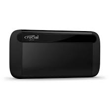

Informática
Inicio
Informatica
Videojuegos
Libros
Peliculas

Crucial X8 SSD 2TB USB-C
110.99€
Agregue almacenamiento rápido y fácilmente a su PC y Mac con la SSD portátil Crucial® X8.
Solo conéctela - no se requiere reformatear. Realice copias de seguridad de fotos, vídeos y documentos importantes con una capacidad de 2 TB. Cifre su unidad y proteja sus datos con Windows Bitlocker to Go o FileVault de Apple.
Crucial X8 también funciona con servicios populares de protección de punto final de marcas como Symantec y McAfee.
Caracteristicas
Velocidad fenomenal. Esté donde esté, acceda a sus juegos, fotos y vídeos rápidamente, incluso sin conexión. Con velocidades de lectura de hasta 1050 MB/s, puede cargar archivos hasta 1,8 veces más rápido que la mayoría de las SSD portátiles, 7,5 veces más rápido que los discos duros portátiles y 100 veces más rápido que las unidades flash USB.
Funciona con una amplia gama de dispositivos. Aumente la capacidad de almacenamiento para casi cualquier ordenador, tablet, teléfono o consola. Funciona con Windows, Mac, iPad Pro, Chromebook, Android, Linux, PS4 y Xbox. Conéctese con una interfaz USB-C 3.2 Gen2 o use nuestros adaptadores incluidos para conexiones USB-C o USB-A..
Creada para las condiciones más difíciles. En entornos de interior o exterior, en casa o fuera de la red, la X8 está fabricada para ser duradera, resistente y compacta. Probada contra temperaturas extremas, golpes, vibraciones e incluso una caída de 7.5 pies, puede confiar en que su unidad resistirá los elementos.
Estilo elegante, Diseño innovador. La forma se combina con la función de la Crucial X8. Construida con un núcleo unibody de aluminio anodizado, el estuche no solo se ve y se siente genial, sino que disipa el calor de manera eficiente para maximizar el rendimiento.
Protección completa de datos. Almacene sus fotos, vídeos y archivos con confianza. Puede usar Windows Backup, macOS Time Machine, Windows Bitlocker to Go y Apple FileVault, junto con suites de software de protección de puntos finales de terceros como Symantec y McAfee.
Una reputación de confiabilidad. Cuando necesite la máxima tranquilidad, confíe en la calidad experta y la innovación en ingeniería de Crucial, una marca de Micron®, uno de los principales fabricantes de almacenamiento flash en el mundo. La SSD portátil Crucial X8 está respaldada por una garantía limitada de 3 años en todo el mundo. Disfrute de materiales de soporte completos, como instrucciones de funcionamiento para diversas plataformas y artículos sobre cómo maximizar el rendimiento de su unidad.
Especificaciones
Unidad de estado sólido
- SDD, capacidad: 2000 GB
- Velocidad de lectura: 1050 MB/s
Puertos e Interfaces
- Conector USB: USB Tipo C
- Versión USB: 3.2 Gen 2 (3.1 Gen 2)
- Wi-Fi: No
Caracteristicas
- Funciones de protección: Resistente a golpes, Resistente a la temperatura, Resistente a las vibraciones
- Color del producto: Negro
- Sistema operativo Windows soportado: Windows 10,Windows 8.1
- Sistema operativo MAC soportado: Si
- Sistemas operativos móviles soportados: Android, iPadOS
- Sistema de formato de archivo: exFAT
- Certificación: UL, CE, TUV, BSMI, RCM, WEEE
Detalles técnicos
- Certificado de sostenibilidad: RoHS
Empaquetado
- Cables incluidos: USB Tipo C, USB tipo C a USB tipo A
- Guía de configuración rápida: Si